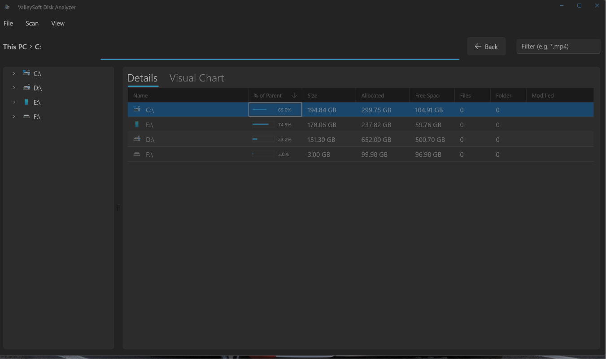
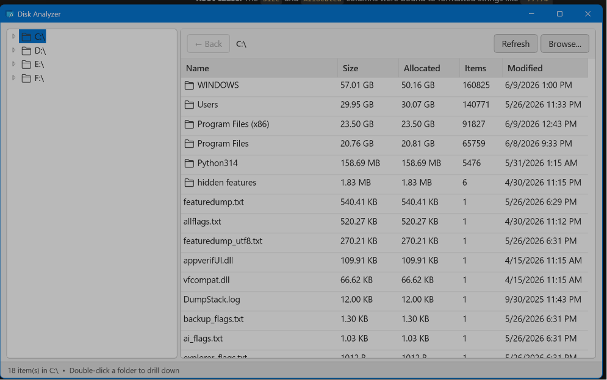
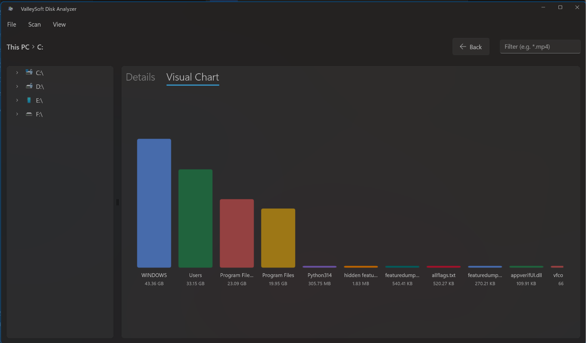
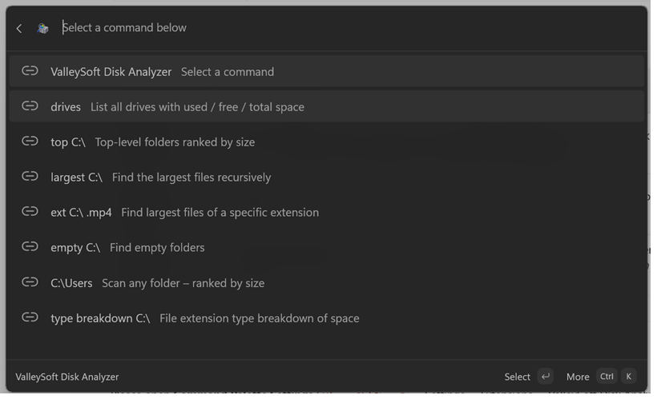
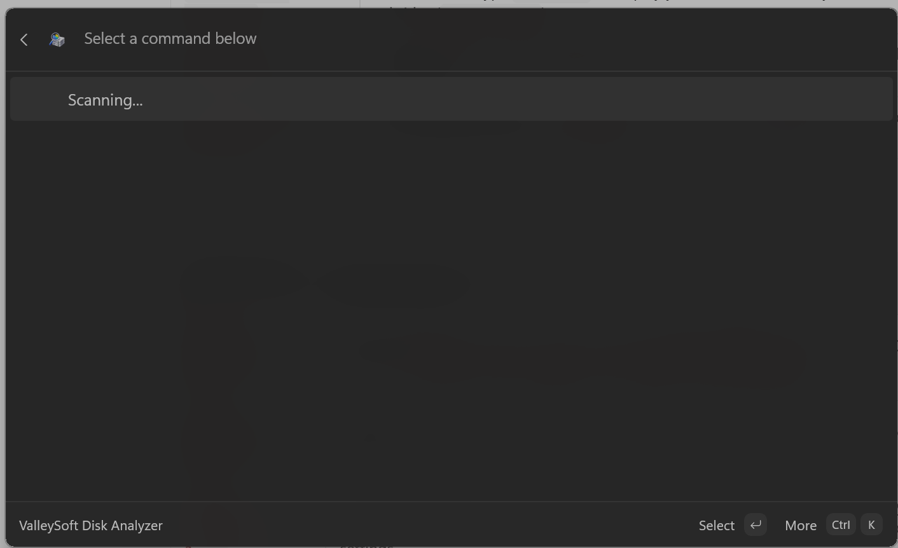
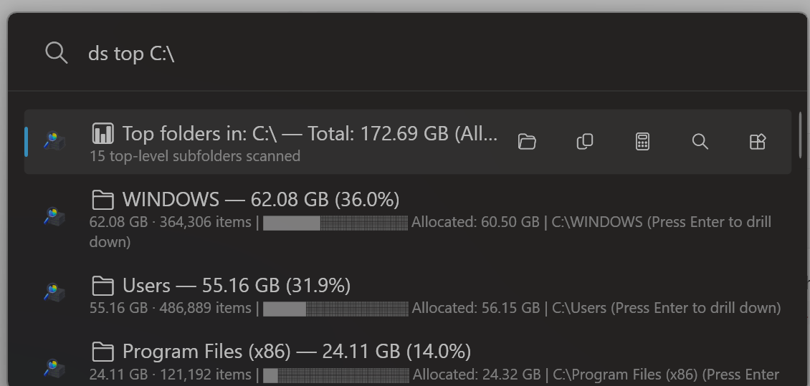
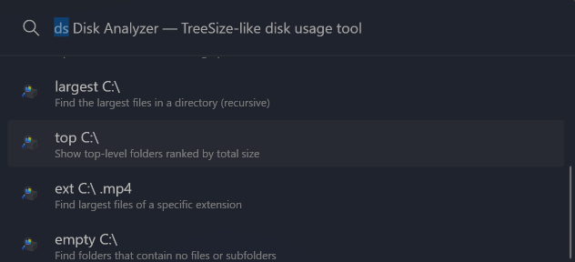
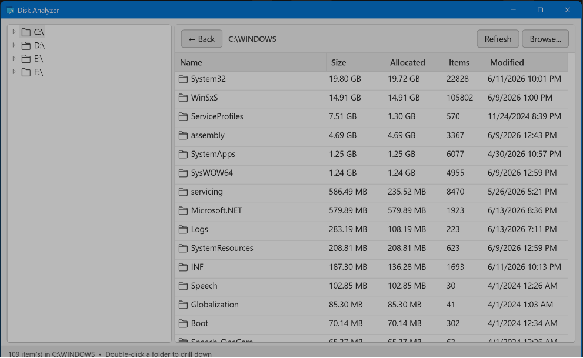

A lightning-fast, native Windows storage analyzer available in three powerful formats. Choose the integration that best fits your workflow.

The Standalone App gives you the maximum amount of screen real estate to analyze your drives. Experience a gorgeous, natively compiled Windows 11 interface built entirely on WinUI 3.

Stop reading text and start visualizing. The Standalone App generates crisp, highly responsive charts that breakdown your drive's composition at a single glance.

Disk Analyzer comes in two distinct standalone packages depending on your system administration needs:
You can download the compiled MSIX bundle directly from the Microsoft Store, or install it rapidly via the Windows Package Manager (Winget).

Built directly for the new Windows 11 Command Palette. Simply type `>` to invoke Disk Analyzer globally without ever leaving your keyboard.

The Command Palette extension runs as a background COM Server. You must register it manually.

If you prefer the classic `Alt + Space` PowerToys Run experience, this plugin drops right in. Filter by size, find empty folders, and drill down directly from the search bar.

The PowerToys Run plugin isn't just a search bar tool. It ships with a fully functional embedded GUI that you can launch at any time for deeper graphical analysis.

Install the plugin directly into your PowerToys local app data directory.